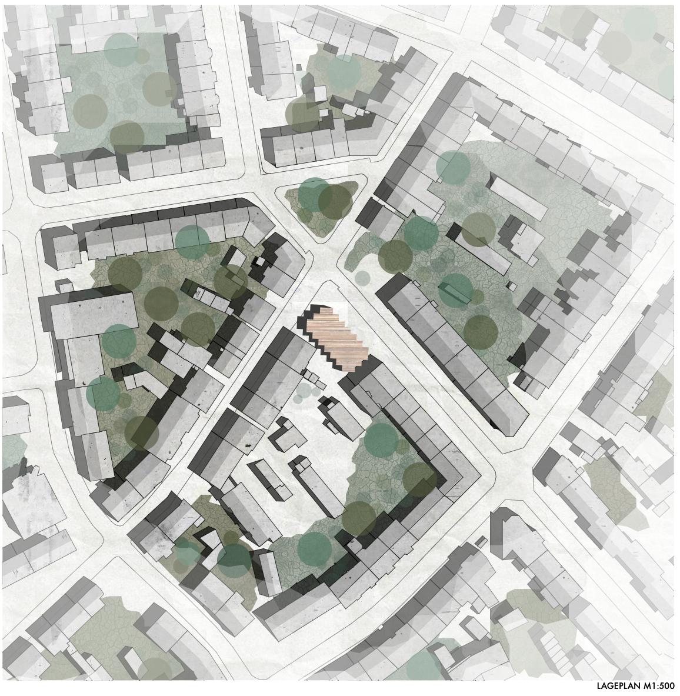
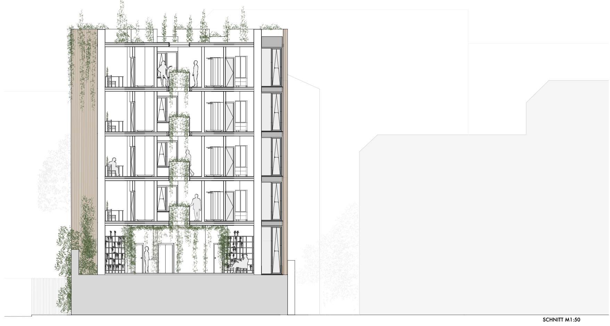
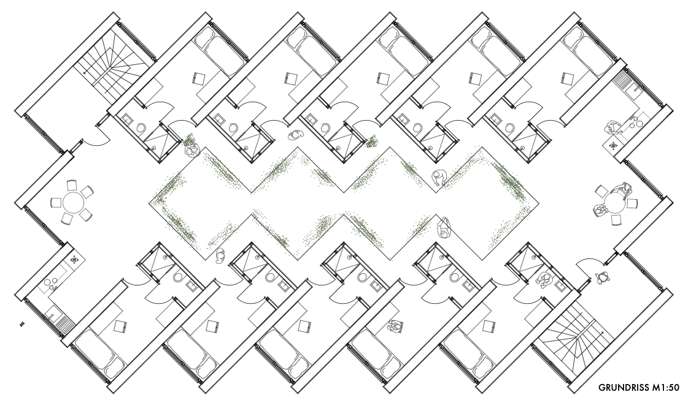
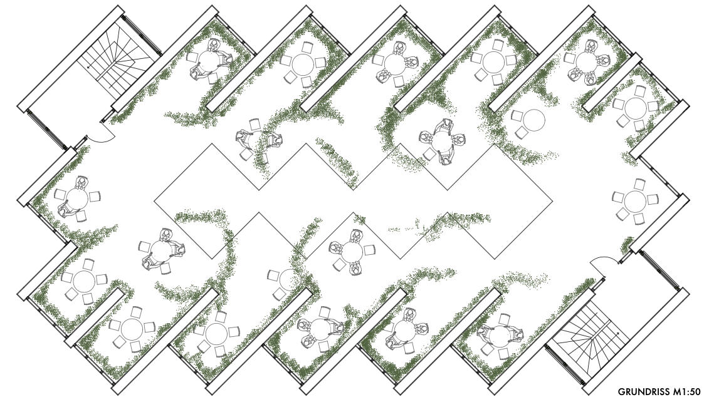
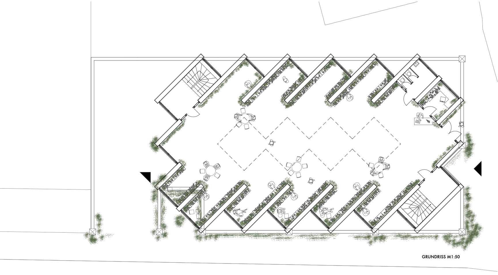
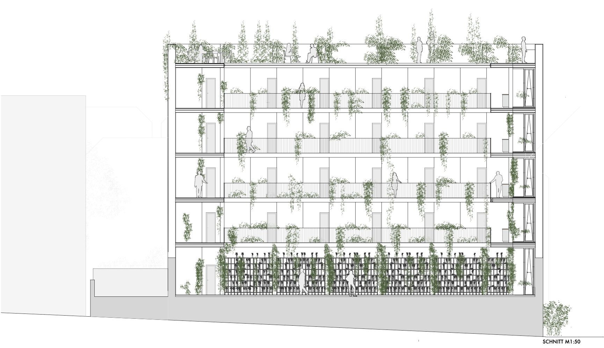
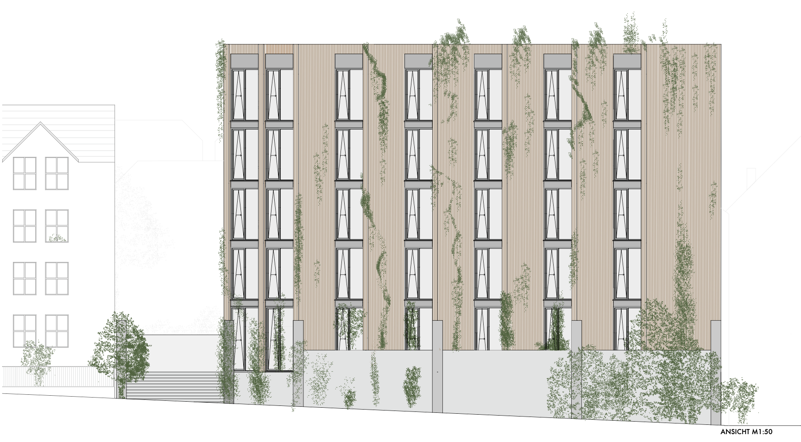
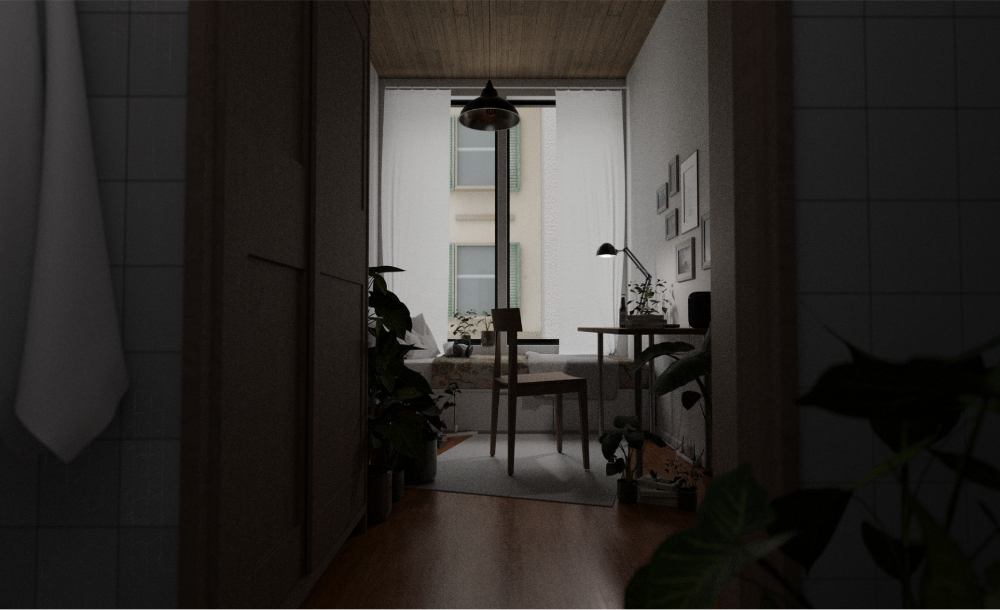
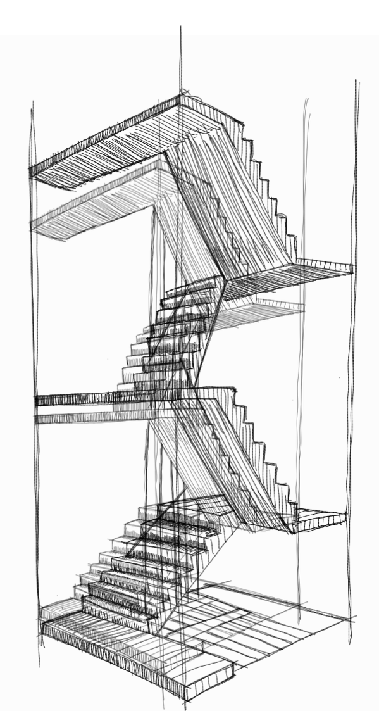
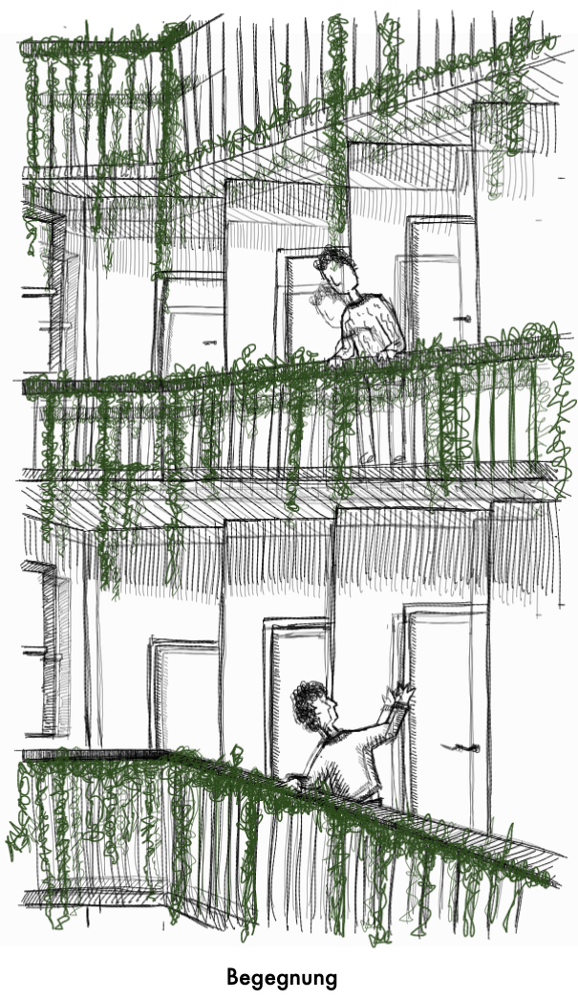

STADTGARTEN

In Darmstadt’s Martinsviertel district, an existing car park is being transformed into the starting point for a new residential and urban concept. The extension utilises the car park’s existing structural framework and complements it with a timber structure. Where there is currently a gap between buildings, a new building is taking shape that combines living, working and community life.
The ground floor opens out onto the city and accommodates commercial use. A florist occupies the base, bringing the theme of the garden directly into the building. Plants line the path through the building and grow from the ground floor up to the roof garden above.
At the centre of the building lies a glass-roofed inner courtyard. As a warm communal space, it forms the spatial heart of the building and connects the different levels. Daylight penetrates deep into the building, whilst the florist’s plants transform the inner courtyard into a vertical garden. The courtyard serves as a meeting place, a space to linger and a communal hub.
Compact one-bedroom flats are arranged around this core. The private rooms are situated along the façade, whilst the kitchen and communal areas are deliberately positioned in the centre of the building. This creates a clear distinction between private retreat and social interaction: the flats offer privacy, whilst the communal areas encourage interaction.
A public roof terrace crowns the building. It extends the communal space outwards and transforms the roof into a place to linger. The Stadtgarten is thus conceived not as a single building, but as a vertical system comprising living spaces, greenery, community and public space.











RELATED PROJECTS
5. Semester
TEEGARTEN
Details
TEEGARTEN
Details

6. Semester
VERNÄHT
Details
VERNÄHT
Details